주인공-옷자락-2
CH-reader-hem2 · 제거1px(마스터) · 남긴 조각 없음
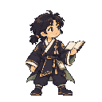
정리 전 · 원래 크기128px의2배정리 후 · 원래 크기128px의2배먹안개도깨비-대기보조
EN-dokkaebi-idle2 · 제거35px(마스터) · 남긴 조각 없음
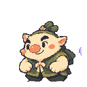
정리 전 · 원래 크기128px의2배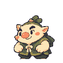
정리 후 · 원래 크기128px의2배먹안개도깨비-공격
EN-dokkaebi-attack · 제거0px(마스터) · 입에서 나오는 공격 연기의 작은 보라색 조각. 큰 연기 고리와 함께 움직이는 효과다.
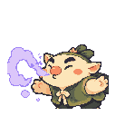
정리 전 · 원래 크기128px의2배 정리 후 · 원래 크기128px의2배
정리 후 · 원래 크기128px의2배먹안개도깨비-움찔
EN-dokkaebi-flinch · 제거91px(마스터) · 놀라 움찔할 때 얼굴 앞에 뜨는 보라색 땀방울 두 개다.
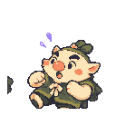
정리 전 · 원래 크기128px의2배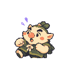
정리 후 · 원래 크기128px의2배먹안개도깨비-눈깜빡임-1
EN-dokkaebi-blink1 · 제거188px(마스터) · 남긴 조각 없음
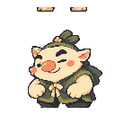
정리 전 · 원래 크기128px의2배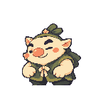
정리 후 · 원래 크기128px의2배먹안개도깨비-눈깜빡임-2
EN-dokkaebi-blink2 · 제거186px(마스터) · 남긴 조각 없음
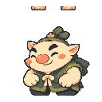
정리 전 · 원래 크기128px의2배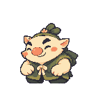
정리 후 · 원래 크기128px의2배먹안개도깨비-고개기울이기-1
EN-dokkaebi-tilt1 · 제거213px(마스터) · 남긴 조각 없음
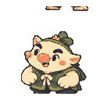
정리 전 · 원래 크기128px의2배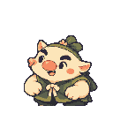
정리 후 · 원래 크기128px의2배먹안개도깨비-고개기울이기-2
EN-dokkaebi-tilt2 · 제거103px(마스터) · 남긴 조각 없음
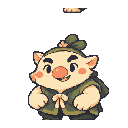
정리 전 · 원래 크기128px의2배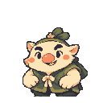
정리 후 · 원래 크기128px의2배먹안개도깨비-고개기울이기-3
EN-dokkaebi-tilt3 · 제거228px(마스터) · 남긴 조각 없음
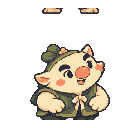
정리 전 · 원래 크기128px의2배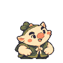
정리 후 · 원래 크기128px의2배먹안개도깨비-어깨다듬기-1
EN-dokkaebi-settle1 · 제거229px(마스터) · 어깨를 고쳐 앉는 동작 양옆의 보라색 짧은 움직임 표시다.
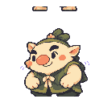
정리 전 · 원래 크기128px의2배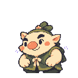
정리 후 · 원래 크기128px의2배먹안개도깨비-어깨다듬기-2
EN-dokkaebi-settle2 · 제거232px(마스터) · 어깨를 다듬는 동작 양옆의 보라색 움직임 표시다.
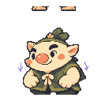
정리 전 · 원래 크기128px의2배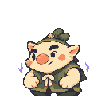
정리 후 · 원래 크기128px의2배뒤섞는호랑이-움찔
EN-tiger-flinch · 제거0px(마스터) · 놀라 움찔할 때 얼굴 앞의 밝은 땀방울 두 개다.
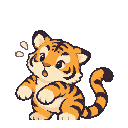
정리 전 · 원래 크기128px의2배 정리 후 · 원래 크기128px의2배
정리 후 · 원래 크기128px의2배뒤섞는호랑이-눈깜빡임-1
EN-tiger-blink1 · 제거75px(마스터) · 남긴 조각 없음
정리 전 · 원래 크기128px의2배정리 후 · 원래 크기128px의2배
뒤섞는호랑이-눈깜빡임-2
EN-tiger-blink2 · 제거77px(마스터) · 남긴 조각 없음
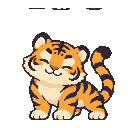
정리 전 · 원래 크기128px의2배정리 후 · 원래 크기128px의2배뒤섞는호랑이-귀쫑긋-1
EN-tiger-ear1 · 제거96px(마스터) · 남긴 조각 없음
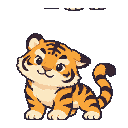
정리 전 · 원래 크기128px의2배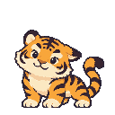
정리 후 · 원래 크기128px의2배뒤섞는호랑이-귀쫑긋-2
EN-tiger-ear2 · 제거68px(마스터) · 남긴 조각 없음
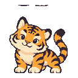
정리 전 · 원래 크기128px의2배정리 후 · 원래 크기128px의2배뒤섞는호랑이-꼬리흔들기-1
EN-tiger-tail1 · 제거21px(마스터) · 남긴 조각 없음
정리 전 · 원래 크기128px의2배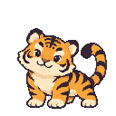
정리 후 · 원래 크기128px의2배 뒤섞는호랑이-꼬리흔들기-2
EN-tiger-tail2 · 제거12px(마스터) · 남긴 조각 없음
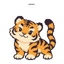
정리 전 · 원래 크기128px의2배정리 후 · 원래 크기128px의2배뒤섞는호랑이-꼬리흔들기-3
EN-tiger-tail3 · 제거13px(마스터) · 남긴 조각 없음
정리 전 · 원래 크기128px의2배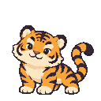
정리 후 · 원래 크기128px의2배 헛소문여우-대기보조
EN-fox-idle2 · 제거34px(마스터) · 남긴 조각 없음
정리 전 · 원래 크기160px의2배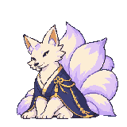
정리 후 · 원래 크기160px의2배 헛소문여우-공격
EN-fox-attack · 제거0px(마스터) · 앞발에서 흩날리는 부적 종이와 작은 쪽지 조각이다.
 정리 전 · 원래 크기160px의2배
정리 전 · 원래 크기160px의2배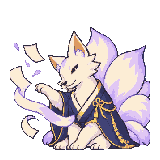
정리 후 · 원래 크기160px의2배헛소문여우-움찔
EN-fox-flinch · 제거72px(마스터) · 얼굴 앞의 보라색 땀 표시다. 왼쪽 셀 경계의 잘린 선은 별도로 제거한다.
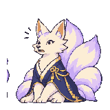
정리 전 · 원래 크기160px의2배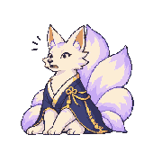
정리 후 · 원래 크기160px의2배헛소문여우-눈깜빡임-2
EN-fox-blink2 · 제거79px(마스터) · 남긴 조각 없음
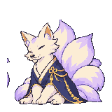
정리 전 · 원래 크기160px의2배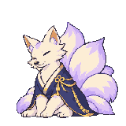
정리 후 · 원래 크기160px의2배헛소문여우-고개좌우-2
EN-fox-head2 · 제거36px(마스터) · 남긴 조각 없음
정리 전 · 원래 크기160px의2배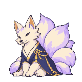
정리 후 · 원래 크기160px의2배 헛소문여우-귀쫑긋-1
EN-fox-ear1 · 제거23px(마스터) · 남긴 조각 없음
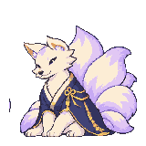
정리 전 · 원래 크기160px의2배정리 후 · 원래 크기160px의2배헛소문여우-꼬리흔들기-1
EN-fox-tail1 · 제거17px(마스터) · 남긴 조각 없음
정리 전 · 원래 크기160px의2배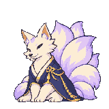
정리 후 · 원래 크기160px의2배 헛소문여우-꼬리흔들기-3
EN-fox-tail3 · 제거53px(마스터) · 남긴 조각 없음
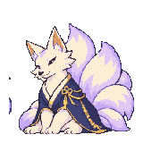
정리 전 · 원래 크기160px의2배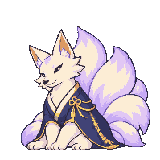
정리 후 · 원래 크기160px의2배봉인-종이접기
FX-seal-fold · 제거0px(마스터) · 접히는 부적 종이 주위의 작은 보라색 봉인 조각이다.
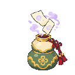
정리 전 · 원래 크기128px의2배 정리 후 · 원래 크기128px의2배
정리 후 · 원래 크기128px의2배봉인-호리병담기
FX-seal-pour · 제거0px(마스터) · 호리병으로 들어가는 부적과 흩어진 봉인 조각이다.
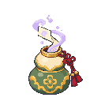
정리 전 · 원래 크기128px의2배 정리 후 · 원래 크기128px의2배
정리 후 · 원래 크기128px의2배아이콘-근거문장
UI-icon-evidence · 제거15px(마스터) · 남긴 조각 없음
정리 전 · 원래 크기32px의2배정리 후 · 원래 크기32px의2배
아이콘-단서보기
UI-icon-clue · 제거12px(마스터) · 남긴 조각 없음
정리 전 · 원래 크기32px의2배정리 후 · 원래 크기32px의2배
아이콘-확실
UI-icon-sure · 제거15px(마스터) · 남긴 조각 없음
정리 전 · 원래 크기32px의2배정리 후 · 원래 크기32px의2배
아이콘-애매
UI-icon-unsure · 제거23px(마스터) · 남긴 조각 없음
정리 전 · 원래 크기32px의2배정리 후 · 원래 크기32px의2배